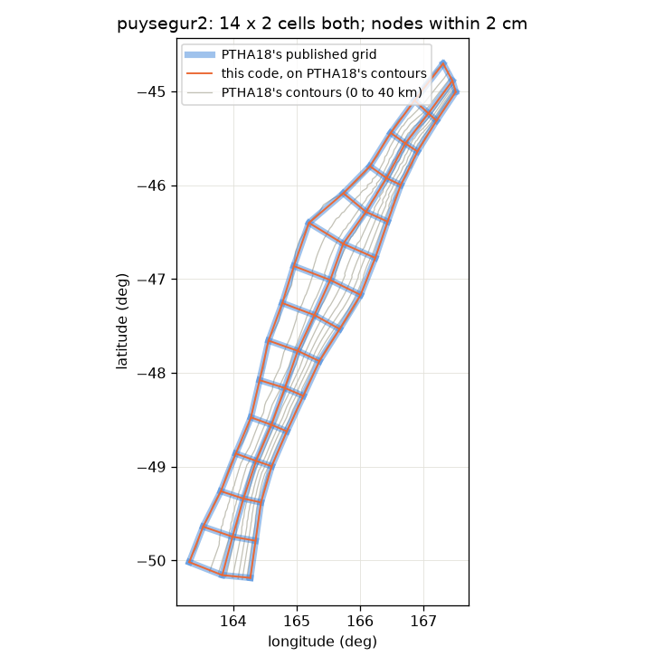
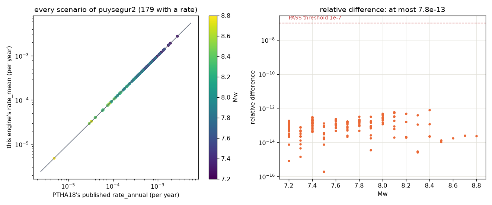

Validation and tests
How do we know the Python code does what PTHA18 did? By feeding it PTHA18's own inputs and comparing the output with the files PTHA18 published. Nine checks do that on real zones (three of them for segmented zones), and 159 unit tests check the pieces. This page lists them all, with the results of the latest run.
At a glance
segmentation, v8parity, unseg_view). A check passes only if the dimensions match exactly and the numbers match to a tolerance far below any physical meaning.Running the checks
Before the first run. mesh needs only internet: it downloads PTHA18's published meshes into validation/ptha18_reference/ itself. engine, events, gcmt, official_segments and events_segmented compare against PTHA18's own input files and logic tree, which the package does not ship: extract them once from the saved session (needs R, rptha and the RData, as step 8 does). Without them the check stops and prints this command:
.venv/Scripts/python.exe official_ptha_data/fetch_official_inputs.py puysegur2 kermadectonga2 kurilsjapan southamerica cascadia makran2 philippine izumariana ryuku sunda2 alaskaaleutians
.venv/Scripts/python.exe from_scratch_v12/validation/validate_v9.py --ndk kermadectonga2_v9/data/gcmt # all 10 checks
.venv/Scripts/python.exe from_scratch_v12/validation/validate_v9.py mesh engine events gcmt --ndk kermadectonga2_v9/data/gcmt
.venv/Scripts/python.exe from_scratch_v12/validation/validate_v9.py segmentation berryman_segments official_segments events_segmented v8parity unseg_viewsegmentation reads the mesh of any <zone>_v* example folder; v8parity runs v9's engine on kermadectonga2_v8's own input and compares with that folder's outputs (it is skipped without the folder); unseg_view compares the unsegmented branch of kermadectonga2_v9seg and kurilsjapan_v9seg (tables, rate curve, band, this run and official) with kermadectonga2_v9 and kurilsjapan_v9, bit for bit, because report_unsegmented.html is built on it (skipped without the folders).
The same applies to the few tests that compare against PTHA18's official inputs (for example test_bird_convergence_reproduces_ptha18_convergence): without inputs/input_<zone>.json they are skipped, not failed, and pytest reports them as skipped.
Each check prints one line per zone and a PASS or FAIL. The reference files are downloaded once from NCI's public server into from_scratch_v12/validation/ptha18_reference/ (no account needed); engine and events need PTHA18's official inputs in inputs/, which step 8 writes; gcmt needs the GCMT files of any example folder. The whole run takes a few minutes. Latest run:
SUMMARY: mesh PASS, engine PASS, events PASS, gcmt PASS, segmentation PASS,
berryman_segments PASS, official_segments PASS, events_segmented PASS, v8parity PASS,
unseg_view PASS
Check 1: the mesh
This code's mesh builder, given PTHA18's own contours (NCI DATA/SOURCEZONE_CONTOURS.zip), against PTHA18's published grid (unit_source_grid/<zone>.shp) and statistics table. With --discretizer optimal, as the pipeline runs.

| zone | cells | area | node offset median / max |
|---|---|---|---|
| puysegur2 | 2 x 14 | +0.000% | 0.0 m / 0 m |
| cascadia | 3 x 22 | -0.002% | 0.0 m / 8,973 m |
| makran2 | 8 x 20 | +0.000% | 0.0 m / 0 m |
| kermadectonga2 | 3 x 72 | +0.000% | 0.1 m / 1 m |
| newhebrides2 | 2 x 38 | +0.002% | 43.7 m / 858 m |
| philippine | 2 x 33 | +0.000% | 0.0 m / 0 m |
| izumariana | 2 x 70 | +0.000% | 0.1 m / 4 m |
| solomon2 | 2 x 42 | -0.000% | 3.2 m / 31 m |
| newguinea2 | 6 x 21 | +0.000% | 0.0 m / 0 m |
| mexico | 3 x 58 | +0.000% | 0.0 m / 3 m |
| kurilsjapan | 4 x 61 | +0.000% | 0.0 m / 0 m |
| alaskaaleutians | 4 x 78 | +0.004% | 0.2 m / 12,097 m |
| sunda2 | 4 x 120 | +0.000% | 1.8 m / 72 m |
| southamerica | 4 x 165 | +0.001% | 29.8 m / 431 m |
On most zones the nodes coincide to the metre. On cascadia and alaskaaleutians a few nodes are 9 and 12 km apart while the median is under a metre and the area agrees to 0.004%: the cause of those few nodes has not been traced. Mean dips agree to 0.015 deg or better.
Check 2: the logic tree
The engine on PTHA18's official input of each zone (written by step 8 from the saved R session) against PTHA18's official branch table: the Gutenberg-Richter a value, the prior and the posterior weight of each of the 32,000 branches.
| zone | branches | largest difference in a | largest difference in posterior weight |
|---|---|---|---|
| puysegur2 | 32,000 / 32,000 | 8.0e-15 | 6.0e-16 |
| kermadectonga2 | 32,000 / 32,000 | 8.3e-13 | 2.0e-15 |
| kurilsjapan | 32,000 / 32,000 | 2.9e-12 | 1.4e-14 |
| southamerica | 32,000 / 32,000 | 1.8e-12 | 2.6e-14 |
Check 3: every scenario's rate
The rate of every earthquake scenario, its mean and its LEVEL 5 percentiles, against PTHA18's published rate_annual columns (TSUNAMI_EVENTS/all_uniform_slip_earthquake_events_<zone>.nc), on the zones PTHA18 did not segment. The check also requires the same scenarios in the same order, and zero rates in the same places. The Bird model is added exactly as step 8 adds it.

| zone | convergence model | scenarios | same rows | mean rate, largest relative difference | percentiles |
|---|---|---|---|---|---|
| puysegur2 | constant | 187 / 189 | yes | 7.8e-13 | 7.2e-13 |
| cascadia | Bird | 793 / 795 | yes | 1.1e-12 | 1.2e-12 |
| makran2 | Bird | 2,209 / 2,211 | yes | 1.9e-12 | 1.9e-12 |
| philippine | Bird | 624 / 626 | yes | 9.2e-11 | 7.6e-9 |
"187 / 189": the official input files (written by step 8) stop at Mw 9.6, the cap on Mw_max, while PTHA18's published table goes on to Mw 9.8 with a zero rate in those two rows on all four zones. (The from-scratch input files go to 9.8, so their tables have PTHA18's rows.) The percentiles come from 40,000 random samples, which is why they agree slightly less closely than the mean.
Check 4: the earthquake selection
Step 5's rule applied to PTHA18's own mesh, against the list of earthquakes PTHA18 itself selected (official_gcmt_observations.csv). v9: also for every PTHA18 segment, the rule applied to the segment's own cells (gcmt_subsetter.R 106-142), where an event near a boundary counts in both neighbours.
| zone | PTHA18 | this rule | result |
|---|---|---|---|
| kermadectonga2 | 9 | 9 | identical list |
| puysegur2 | 4 | 4 | identical list |
| kurilsjapan | 21 | 21 | identical list |
| southamerica | 25 | 25 | identical list |
| makran2, izumariana | 0 | 0 | identical |
| cascadia | 1 | 1 | identical list |
| philippine | 6 | 6 | identical list |
| kermadectonga2 _tonga / _kermadec / _hikurangi | 4 / 6 / 0 | 4 / 6 / 0 | identical lists (one event in both _tonga and _kermadec) |
| kurilsjapan _kurils / _japan | 13 / 8 | 13 / 8 | identical lists |
| southamerica, 5 segments | 0 / 4 / 8 / 8 / 5 | 0 / 4 / 8 / 8 / 5 | identical lists |
| izumariana _izubonin / _marianas | 0 / 0 | 0 / 0 | identical |
Check 5: PTHA18's segments (v9)
The engine on PTHA18's own segmented input, exactly as step 8 builds it for a segmented example (PTHA18's segment rows of sourcezone_parameters.csv, the session's GCMT events per segment, PTHA18's Bird model on its mesh), against PTHA18's official tree of the zone and of every segment (logic_tree_branches_<zone>_<segment>_OFFICIAL.csv, extracted from the saved session). This covers what is specific to a segment: its own area, convergence, mean dip, Mw_max anchor, coupling and GCMT events.
.venv/Scripts/python.exe from_scratch_v12/validation/validate_v9.py official_segments
| zone: representations | branches | largest difference in a | largest difference in posterior weight |
|---|---|---|---|
| kermadectonga2: unsegmented, _tonga, _kermadec, _hikurangi | 32,000 / 32,000 each | 8.3e-13 | 2.0e-15 |
| kurilsjapan: unsegmented, _kurils, _japan | 32,000 / 32,000 each | 2.9e-12 | 1.4e-14 |
| izumariana: unsegmented, _izubonin, _marianas | 32,000 / 32,000 each | 1.2e-11 | 1.1e-14 |
| ryuku: unsegmented, _nankai, _ryuku | 32,000 / 32,000 each | 8.9e-15 | 6.0e-16 |
| sunda2: unsegmented, _java, _sumatra, _andaman, _arakan | 32,000 / 32,000 each | 2.4e-12 | 1.2e-14 |
| southamerica: unsegmented and 5 segments | 32,000 / 32,000 each | 1.8e-12 | 2.5e-14 |
| alaskaaleutians: unsegmented, _eastern, _western, _komandorski | 32,000 / 32,000 each | 2.7e-12 | 4.1e-15 |
28 logic trees on 7 zones. It guards a real bug fixed with it: segments used the whole zone's convergence instead of their own area-weighted one (LEVEL 0), so their slip rates could not match PTHA18's.
Check 6: every scenario of a segmented zone (v9)
What PTHA18 publishes for a segmented zone is one rate per scenario, 0.5 x the unsegmented model plus 0.5 x every segment the scenario touches (each in proportion to the part of it inside), with percentiles from PTHA18's partial-segmentation step. The engine on the same segmented input writes that as scenario_rates_<zone>_source_zone.csv; this check compares it with PTHA18's published rate_annual and its 5 percentile columns (NCI all_uniform_slip_earthquake_events_<zone>.nc).
.venv/Scripts/python.exe from_scratch_v12/validation/validate_v9.py events_segmented
| zone | segments | scenarios | mean rate, largest relative difference | percentiles |
|---|---|---|---|---|
| kermadectonga2 | 3 | 2,947 / 2,949 | 2.9e-12 | 2.6e-11 |
| kurilsjapan | 2 | 3,335 / 3,339 | 2.5e-12 | 3.3e-11 |
| izumariana | 2 | 1,930 / 1,932 | 7.5e-11 | 3.1e-10 |
| ryuku | 2 | 1,238 / 1,240 | 4.3e-11 | 4.3e-11 |
| sunda2 | 4 | 7,454 / 7,574 | 2.2e-12 | 4.5e-11 |
| southamerica | 5 | 9,911 / 10,117 | 5.7e-11 | 7.6e-11 |
| alaskaaleutians | 3 | 4,111 / 4,125 | 1.3e-12 | 2.3e-11 |
Every scenario, with zero rates in the same places. The rows missing from the engine's table are PTHA18's magnitudes above 9.6, the Mw_max cap, which carry a zero rate. Before 2026-09-30 this could not be checked: a segment was a slice of the mesh with its own scenarios, so a rupture across a boundary had no rate from either segment.
Check 7: where the segment boundaries fall (v9)
A segmented run places its boundaries at Berryman et al. (2015) Table 3.1's segment end points (why). PTHA18 took its segments from the same table and typed their columns into sourcezone_parameters.csv. This check places Berryman's end points on PTHA18's own published mesh with the same code a run uses (segmentation.berryman_segments) and compares every boundary the two share with PTHA18's index. It passes when all are within 2 columns.
.venv/Scripts/python.exe from_scratch_v12/validation/validate_v9.py berryman_segments
| zone | columns | Berryman / PTHA18 segments | shared boundaries (Berryman vs PTHA18) | worst |
|---|---|---|---|---|
| kermadectonga2 | 72 | 3 / 3 | 22 vs 24, 57 vs 58 | 2 |
| kurilsjapan | 61 | 2 / 2 | 45 vs 45 | 0 |
| izumariana | 70 | 2 / 2 | 26 vs 27 | 1 |
| ryuku | 40 | 2 / 2 | 13 vs 13 | 0 |
| sunda2 | 120 | 3 / 4 | 38 vs 39, 67 vs 67 (PTHA18's Arakan is not in Table 3.1) | 1 |
| southamerica | 165 | 6 / 5 | 34, 60, 88, 137, all identical (PTHA18 merges Patagonia North and South) | 0 |
| alaskaaleutians | 78 | 6 / 3 | 29, 67 identical (PTHA18 merges four eastern segments) | 0 |
| newhebrides2 | 38 | 4 / 4 | 9, 20, 30 vs 9, 20, 29 | 1 |
| solomon2 | 42 | 3 / 3 | 19, 28 vs 19, 29 | 1 |
18 shared boundaries: 12 on PTHA18's exact column, 5 one column away, 1 two columns. A boundary next to a segment PTHA18 merged is matched under the name of the Berryman segment on that side (PTHA18's _patagonia as Patagonia North, _eastern as Shumagin). The end points were transcribed from the rendered pages of the report and checked two ways by test_segmentation.py: every segment starts where its neighbour ends, and each zone's outer ends are its Whole Margin row's.
The 187 tests
.venv/Scripts/python.exe -m pytest from_scratch_v12/pyptha_v12/tests -q # 187 passed, 15 skipped here (the skipped ones need files the extraction above writes)| File | tests | What it proves |
|---|---|---|
test_v8_fidelity.py | 23 | the Jacobian is MINPACK's bit for bit; the optimiser is MINPACK's lmdif; the down-dip lines match rptha's R output (under 1 m); the mesh reproduces PTHA18's grid; the cell table matches PTHA18's (4e-10); step 1 on synthetic plates (contour positions under 0.3 km, a slanted end cut square and a clean one kept, a pointed end cut); the scenario table is row-identical to PTHA18's; the convergent-slip formula; Bird's convergence reproduces PTHA18's on 7 zones with PTHA18's table, and on 5 zones with Bird's public catalogue read from the package's own data (--ptha false); step 7b's saved features give step 8 the same HS/VAUS comparison as the whole fields |
test_orthogonal_discretisation.py | 6 | the optimiser lowers the badness, beats the simple method, gives equal-length pieces, matches rptha's puysegur depths, is reproducible |
test_contour_discretisation.py | 3 | a real mesh is physical: grid shape, depths, dip increasing with depth |
test_unit_sources.py | 8 | on a planar fault, the cell properties recover the known dip, strike, sizes and area |
test_official_rptha_suite.py | 9 | rptha's own test cases ported: mean_angle, distance_down_depth, interpolate_gc_path, spherical_to_cartesian2d, and rptha's Alaska example |
test_events.py | 6 | scenarios have the exact moment of their magnitude, sizes within the scaling bounds, the packed cell strings round-trip |
test_scaling.py, test_r_parity.py | 21 | magnitude and moment, Strasser sizes and slip against values from R; Okada tables |
test_rates.py | 9 | Gutenberg-Richter curves, shares summing to 1, the moment balance recovering the slip rate, the Bayesian update moving weights |
test_moment_balance.py | 15 | edge scenarios, the integrated slip, the edge fit, the coupling prior, R's approx, the dip factor, the scenario rates |
test_logic_tree.py | 19 | segmentation weights, the edge correction, R's weighted_percentile and quantile(type = 6), the percentile sampling |
test_stochastic_slip.py | 8 | the HS generator keeps the mean slip, is non-negative, centres its peak, is reproducible with a seed |
test_okada.py | 5 | sea-floor deformation against Okada's 1985 tables (a port not used by the pipeline) |
test_berryman_zone.py | 2 | v9: the zone's coupling is Berryman's Whole Margin row where there is one; its Mw max observed floor is the largest of its rows, not the dominant one; b unchanged |
test_column_rule.py | 5 | --columns trench|average: the default is rptha's rule, average counts columns from the average row, an unknown rule is refused |
test_rupture_size.py | 11 | v10 / v10_q: the default is rptha's rule; with local every block fits, every cell is in a rupture of every magnitude, no duplicates, exact moment, areas follow Strasser on an uneven mesh (rptha off by more than 2.5 times there), never worse than rptha on a uniform mesh, the full-length case, the event table; coverage_weights by hand, equal on rptha's interior, evening out the coverage |
test_trench_ramp.py | 4 | v10_q: a synthetic trench ramping from 20 to 8 km at one end is trimmed there only; None = v9; no ramp, nothing trimmed; the depth below the trench near the ramp is measured from the real trench |
test_segmentation.py | 20 | v9: Berryman's Table 3.1 end points chain from segment to segment and match each zone's Whole Margin row; a mesh along Berryman's Hikurangi-Kermadec-Tonga trench gets PTHA18's three segments in order, each with its own row; a segment beyond the mesh is dropped (Patagonia on a SLAB1.0 southamerica); Bird segments tile the mesh, short runs are merged, repeated plate pairs get distinct keys, PTHA18's indices are rescaled for the comparison; step 8's official segments block keeps PTHA18's rows; the Bird-to-Berryman table names real plate pairs and Berryman rows; the engine reproduces PTHA18's official tree of kermadectonga2's _hikurangi segment and keeps it on the zone's scenario table (skipped without the extraction) |
23 in test_v8_fidelity.py because the two Bird convergence tests run once per zone. Test data (PTHA18's puysegur2 contours, grid and scenario table; rptha's R output) are in pyptha_v12/tests/data/.
Checks of v12 (external mesh)
.venv/Scripts/python.exe V9/from_scratch_v12/validation/validate_v12_mesh.py # from ptha18_logic_tree_test/- geometry: the colleagues' alaskaaleutians mesh read by
mesh_file.pyagainst PTHA18's unit-source table: centres and strikes to 1e-10 on all 312 cells; rows 2-4 identical in length, width, depth and dip; the trench row differs because the file puts the trench at 0.1 km (PTHA18: 0 km). - rates: the engine on PTHA18's official input with the file in place of PTHA18's table: with the trench at 0 km the same 4,111 scenarios, rates to 8.5e-12; as sent, within 0.07%.
- tests:
test_mesh_file.py(8): shuffled lines, rotated or reversed corner rings, km or m, either depth sign, a mesh dipping the wrong way, bad files refused.
Checks of v11 (variable shear modulus)
.venv/Scripts/python.exe V9/from_scratch_v12/validation/validate_v11.py # from ptha18_logic_tree_test/; mu_Mw engine hs_vaus- mu_Mw: every published
variable_mu_Mwof puysegur2 and kermadectonga2 (FAUS, HS, VAUS; 101,000+ scenarios) to 4e-15, from PTHA18's unit-source table. - engine: the v11 engine on PTHA18's puysegur2 input with PTHA18's own HS catalogue:
variable_mu_rate_annualand its 5 percentiles to 7e-13, every zero rate in place; the constantrate_annualunchanged (8e-13). - hs_vaus: PTHA18's 4 DART weight curves recovered from its published rates (fitted on puysegur2 alone, kermadectonga2 reproduced to 2e-14; each passes the report's Section 3.6 cubic check), and every published HS and VAUS rate of both zones, both rigidities, to 4e-12.
- calabria2_v11: every file of steps 1-7b byte-identical to calabria2_v10_q's; step 7c refuses to copy if the engine's constant rates differ from step 7's.
Checks of v10 and v10_q
- Rupture areas within a factor 1.5 of Strasser at Mw 7.2-8.7 on 31 PTHA18 meshes (official statistics) and 4 of ours: rptha 46-100%, local 85-100%; worst rupture better or equal on 30 of the 31; no cell left out of every rupture of a magnitude.
- Same inputs, one rule changed: calabria2_v9 / _v10 / _v10_q and caribbean2_v9 / _v10 / _v10_q have byte-identical meshes, convergence and GCMT files; the control zones kermadectonga2 and kurilsjapan are their v9 inputs run with each rule (
V9/html/v10q_rationale/src/run_controls.py), and the "classic" run reproduces the v9 folder exactly. - Rates per magnitude identical to rptha's rule on all 12 runs (exceedance tables and rate curves to 3e-13); moment identity (sum of weight x slip x area = M0 / rigidity) to 1e-14.
- PTHA18's misfit (integrated slip vs convergence, final model), v10_q / rptha: calabria2 0.85, caribbean2 0.70, kermadectonga2 0.72, kurilsjapan 0.91.
- Ramp rule: run on every raster the V9 folders use; it trims only hellenic (71 km), caribbean / antilles (68 km) and kermadectonga2 (11 km).
runs/python/hellenic_west2_v10q_geometry_classicseparates its effect from the rupture rule's.
Numbers and figures: What is new in v10 and v10_q, V9/html/v10q_rationale.html.
What is not validated
- Segmented zones: v9 runs LEVEL 0 (
--segmented true) with the boundaries at Berryman et al. (2015) Table 3.1's segment end points, never from PTHA18'ssourcezone_parameters.csv. On PTHA18's own meshes they land within 2 columns of PTHA18's (check 7); on this run's own mesh they can move a little more, because the mesh differs, and the counts differ where PTHA18 merged Berryman's segments or added one.validate_v9.py segmentationprints Bird's alternative boundaries beside PTHA18's and checks only that they tile the mesh. What IS checked: given PTHA18's segments, the engine reproduces PTHA18's segment trees and every published scenario rate of 7 segmented zones (checks 5 and 6), which is the official run step 8 builds for a segmented example; PTHA18's rule gives PTHA18's own GCMT list on every segment (check 4); and v9's engine reproduces v8 bit for bit from v8's own input (validate_v9.py v8parity). So what a segmented v9 run differs by is its inputs (Bird's boundaries, and the Berryman rows that follow from them), never its method. - The automatic contours cannot be "equal" to PTHA18's, which were edited by hand: they are compared by distance (1 to 3 km per level, step 1) and by their effect on the rates (the examples).
- HS and VAUS are random: compared as distributions (comparison).
- v10 / v10_q against observations: PTHA18 calibrated its HS / VAUS families against DART records with rptha's ruptures; nobody has done that with
--rupture-size local. Its checks are internal (scaling, moment, slip budget, control zones). - Zones PTHA18 never modelled (calabria2, caribbean2, antilles2) have nothing to compare with; they run on the same, validated code.